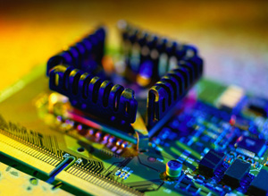
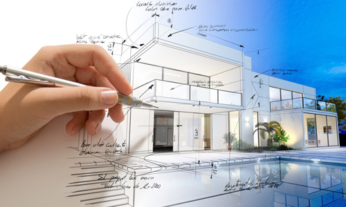
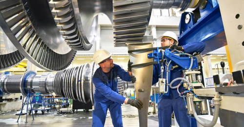

Engineering Majors
1- Electrical engineering
Electrical engineering is an engineering discipline concerned with the study, design and application of equipment, devices and systems which use electricity, electronics, and electromagnetism
2- Civil engineering
Civil engineering is a professional engineering discipline that deals with the design, construction, and maintenance of the physical and naturally built environment, including public works such as roads, bridges, canals, dams, airports, sewerage systems, pipelines, structural components of buildings, and railways.
3- Architectural engineering
Architectural engineers apply science and technology to the real world by designing buildings that enhance our standard of living and improve our quality of life. They do this by combining building systems – structural, electrical, mechanical, lighting, acoustics and fire protection - into an integrated whole.
4- Mechanical engineering
Mechanical engineering is an engineering branch that combines engineering physics and mathematics principles with materials science to design, analyze, manufacture, and maintain mechanical systems. It is one of the oldest and broadest of the engineering branches
